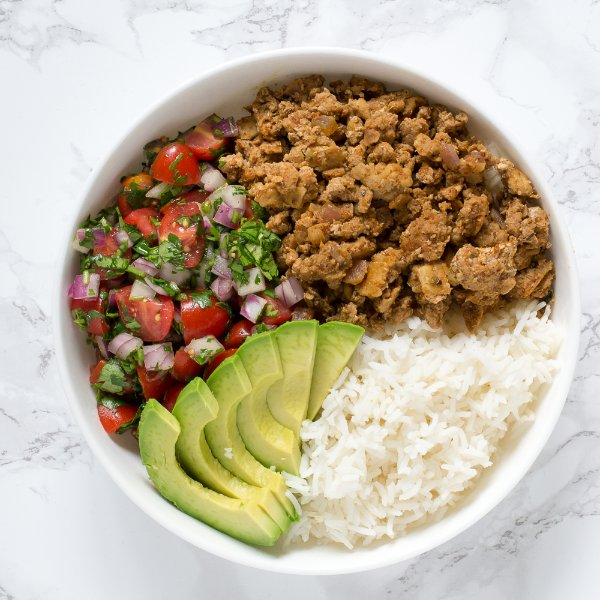

Turkey Taco Rice Bowl with Pico de Gallo & Avocado Slices

Total Time
35 min
Nutrition (per serving)
582.8 kcalCalories
40.1 gProtein
52.2 gCarbs
25.2 gFat
Full nutrition table
| Calories | 582.8 kcal |
| Total fat | 25.2 g |
| Saturated fat | 7.7 g |
| Trans fat | 0.2 g |
| Cholesterol | 117.4 mg |
| Sodium | 122.2 mg |
| Carbohydrates | 52.2 g |
| Fiber | 7.8 g |
| Sugars | 4.2 g |
| Protein | 40.1 g |
| Potassium | 1030.9 mg |
| Calcium | 98.2 mg |
| Iron | 6.3 mg |
| Vitamin A | 785.8 IU |
| Vitamin C | 25.7 mg |
| Vitamin D | 23.8 IU |
Cookware
Ingredients
- 1avocado
- 1 cupbasmati rice
- 1 small bunchcilantro
- 1 pintgrape tomatoes
- 1 ½ lbground turkey
- 1lime
- 1 mediumred onion
- black pepper
- chili powder
- cumin, ground
- garlic powder
- onion powder
- oregano, dried
- salt
- virgin coconut oil
Steps
- Using a strainer or colander, rinse the rice under cold, running water, then drain and transfer to a small saucepan. Add water and bring the mixture to a boil over high heat.1 cup basmati rice
16 fl oz (2 cups) water - Wash and dry the fresh produce.1 pint grape tomatoes
1 avocado
1 lime
1 small bunch cilantro - Once the liquid comes to a boil, stir the mixture, cover the saucepan, and reduce the heat to low. Cook the rice until the liquid is fully absorbed, 15 to 18 minutes. Once done, remove the rice from the heat and let it stand, still covered, for 5 minutes.
- Quarter the grape tomatoes and transfer to a medium salad bowl (that will hold the pico de gallo salsa).
- Using a knife, shave the cilantro leaves off the stems at a downward angle, working away from your body; discard the stems and finely chop the leaves. Add to the salad bowl.
- Juice the lime and add to the salad bowl.
- Trim off and discard the ends of the onion and remove the outer layer; small dice the onion into ¼-inch pieces. Transfer one ½ of the diced onion to the salad bowl and the other ½ to a small bowl.1 medium red onion
- Add coconut oil to a nonstick skillet and preheat over medium heat.1 tbsp virgin coconut oil
- In a small bowl, combine and mix together chili powder, cumin, oregano, garlic powder, onion powder, salt, and pepper.2 tbsp chili powder
2 tsp cumin
1 tsp oregano
1 tsp garlic powder
1 tsp onion powder
1 tsp salt
½ tsp black pepper - Once the skillet is hot, add the remaining onion; cook, stirring frequently, until softened, 3 to 4 minutes.
- Add the ground turkey to the skillet; cook, breaking apart with a spoon, until browned and crumbly, 3 to 4 minutes.1 ½ lb ground turkey
- Add the spice mixture to the onion and turkey; stir until fragrant and well combined into the mixture, 15 to 30 seconds.
- Season the pico de gallo with salt and pepper; toss to combine.½ tsp salt
¼ tsp black pepper - Remove the pit from the avocado with a knife or spoon; thinly slice the flesh crosswise (without piercing the skin) and scoop out. Transfer to a small bowl.
- Uncover the rice and fluff with a fork.
- To serve, arrange the rice, ground turkey, pico de gallo, and avocado slices in bowls. Enjoy!